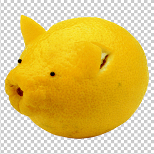
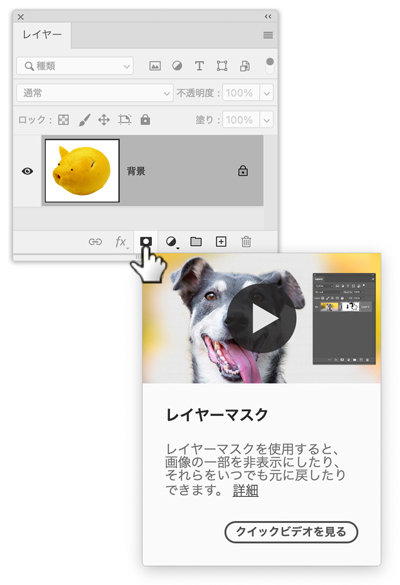
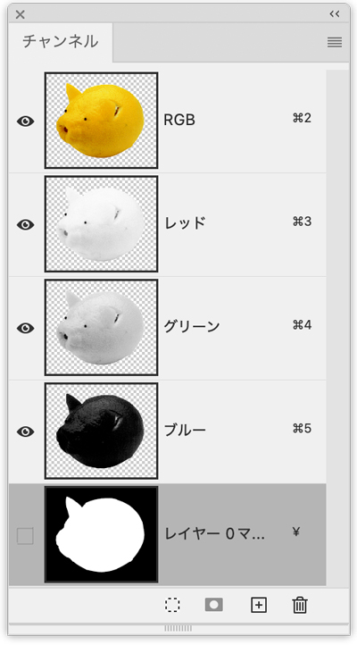
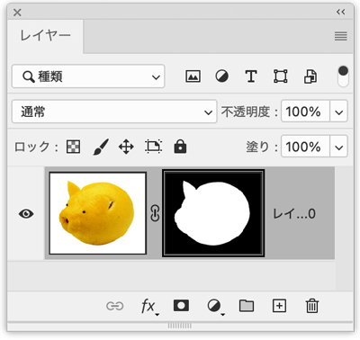

選択範囲を切り抜き

- 「レイヤーマスクを追加」で「マスクレイヤーを作成」
選択範囲を指定
「オブジェクト選択ツール」で指定
- 選択したいオブジェクトを囲む

レイヤーマスクを追加
- 「選択範囲」を指定後、レイヤーマスクを追加します

- 「レイヤーマスクを追加」は、「選択範囲を保存」と同じ結果になります（ただし、自動的に切り抜かれた状態になります）

- レイヤー名「背景」は、自動的に「レイヤー０」に変更されます
